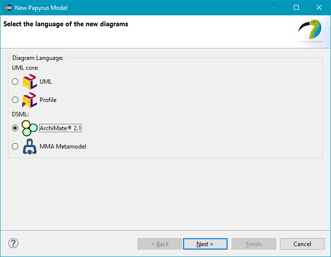
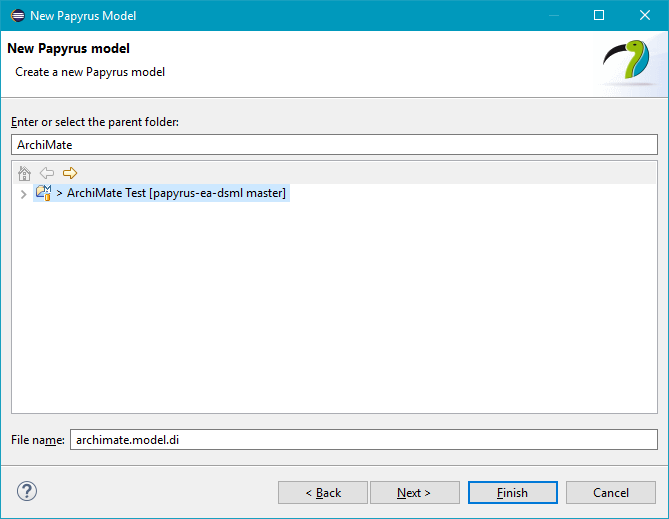
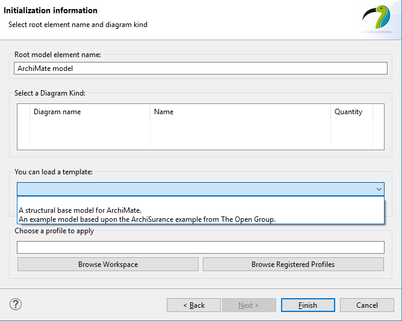

About model templates
This add-in comes with two model templates free to use. The goal for the templates is to give the user a fast start and examples of how ArchiMate models can look like. One model template is just a structural model with otherwise zero content, i.e. it is a model containing the extensions/layers in ArchiMate and an empty default diagram in each of these extensions/layers. The other model template is a more full fledged example based upon The Open Group ArchiSurance example.
To create a model based upon either template, do the following:
- Create a Papyrus model in Eclipse
- Select ArchiMate 2.1
- Click Next
- Select parent folder and a enter a name for the model
- Enter a root model element name for your model and select a model template under You can load a template:
- Click Finish

Diagram: Dialog with ArchiMate model selection selected

Diagram: Dialog with ArchiMate model parent selection

Diagram: Standard template selection